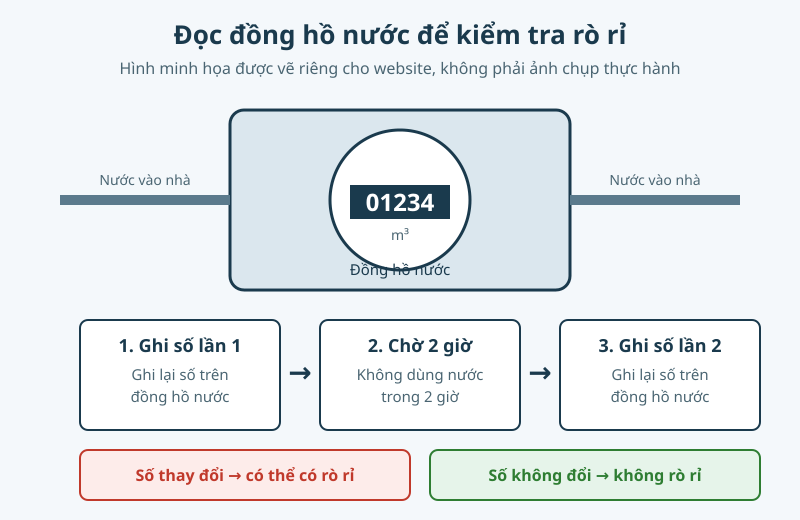

Tiết kiệm nước sinh hoạt: bắt đầu từ rò rỉ và thói quen hằng ngày
Tác giả: Ruler
Chuyên mục: Tiết kiệm nước — Cập nhật: 23/11/2026
Hóa đơn nước tăng lên thường không đến từ một lần dùng nước nhiều bất thường, mà đến từ những giọt nước nhỏ rò rỉ mỗi ngày và những thói quen dùng nước mà gia đình đã quen tay từ lâu. Một vòi nước rỉ từng giọt, một bồn cầu bị hở van, một lần tắm kéo dài thêm vài phút — riêng từng việc thì nhỏ, cộng lại cả tháng thì không nhỏ chút nào. Bài này hướng dẫn bạn tìm rò rỉ trong nhà bằng ba cách đơn giản, rồi đổi năm thói quen dùng nước hằng ngày mà không làm cuộc sống bất tiện hơn.
Vì sao nên bắt đầu từ rò rỉ, không phải từ việc cắt giảm?
Nhiều người nghĩ tiết kiệm nước là tắm nhanh hơn, rửa bát ít nước hơn, tưới cây ít hơn. Những việc đó có ích, nhưng chúng đòi hỏi bạn phải thay đổi thói quen mỗi ngày và dễ bỏ cuộc sau vài tuần. Rò rỉ thì khác: rò rỉ là nước mất đi mà không ai dùng, không ai hưởng lợi. Sửa một chỗ rò rỉ là tiết kiệm được ngay, mà không cần ai trong nhà phải thay đổi thói quen gì cả.
Cơ quan Bảo vệ Môi trường Mỹ (EPA), qua chương trình WaterSense, cho biết việc sửa các chỗ rò rỉ trong nhà mà gia đình tự sửa được có thể giúp tiết kiệm khoảng 10% hóa đơn nước. Con số này là ước tính cho hộ gia đình ở Mỹ, nơi cách tính tiền nước và mức dùng nước khác Việt Nam, nên bạn đừng áp thẳng con số 10% này sang hóa đơn nước của nhà mình. Điều đáng nhớ ở đây là nguyên tắc: rò rỉ là khoản thất thoát lớn nhất mà lại dễ sửa nhất, vì vậy nên xử lý rò rỉ trước, rồi mới tính đến việc thay thiết bị hay đổi thói quen.
Tổng công ty Cấp nước Sài Gòn (SAWACO), qua bài viết trên Tuổi Trẻ Online ngày 28/07/2025, cũng nêu một nhận xét tương tự cho bối cảnh Việt Nam: rò rỉ nhỏ ở vòi nước hay bồn cầu có thể gây thất thoát hàng chục khối nước mỗi tháng. Bài viết này cũng cho biết việc lắp đặt thiết bị tiết kiệm nước như vòi sen lưu lượng thấp hay bồn cầu xả kép có thể giúp tiết kiệm 20–40% lượng nước sử dụng. Đây là mức mà SAWACO nêu ra cho các thiết bị tiết kiệm nước, không phải mức cam kết cho mọi nhà, vì mức tiết kiệm thực tế còn phụ thuộc vào thiết bị cũ nhà bạn đang dùng và cách gia đình dùng nước.
Ba cách tự kiểm tra rò rỉ trong 10 phút
Bạn không cần dụng cụ chuyên nghiệp để bắt đầu. Ba cách dưới đây đều làm được bằng mắt thường và một ít phẩm màu thực phẩm.
Cách thứ nhất: đọc đồng hồ nước. Đây là cách mà cả EPA và SAWACO đều hướng dẫn. Bạn đóng hết các vòi nước, tắt hết các thiết bị dùng nước trong nhà, chờ cho bồn cầu và bồn chứa ngừng lấy nước, rồi ghi lại chỉ số trên đồng hồ nước. Sau đó, bạn không dùng nước trong hai giờ rồi quay lại đọc chỉ số một lần nữa. EPA khuyến nghị so sánh chỉ số trước và sau hai giờ không dùng nước: nếu chỉ số thay đổi, hệ thống nhà bạn có khả năng đang rò rỉ. SAWACO hướng dẫn theo cùng nguyên lý, nhưng diễn đạt ngắn gọn hơn cho người dùng ở Việt Nam: sau khi đóng tất cả thiết bị dùng nước, nếu kim hay chỉ số đồng hồ vẫn dịch chuyển thì có nghĩa là đã có hiện tượng rò rỉ sau đồng hồ. Nếu nhà bạn dùng đồng hồ nước điện tử, bạn có thể nhờ người nhà quan sát xem có dấu cộng hay kim quay chậm khi không ai dùng nước hay không.

Cách thứ hai: thử bồn cầu bằng phẩm màu. Bạn nhỏ vài giọt phẩm màu thực phẩm vào két nước ở phía sau bồn cầu, không xả nước, chờ khoảng 10 phút. Nếu màu xuất hiện trong lòng bồn cầu, nước đang rò qua bộ phận đóng kín trong két, thường là do van cao su đã cũ và mòn. EPA lưu ý cần xả nước ngay sau phép thử để tránh làm két nước bị nhuộm màu. SAWACO cũng hướng dẫn một cách tương tự: mở nắp két nước, chờ nước bơm đầy lại, đánh dấu mức nước, cho vài giọt phẩm màu nổi bật như đỏ hoặc tím vào két, rồi quan sát xem nước trong lòng bồn có đổi màu hay mực nước có giảm xuống so với vị trí đã đánh dấu hay không. Nếu có, bạn cần thay thế hoặc sửa chữa các chi tiết hư hỏng trong két nước.
Cách thứ ba: nhìn và nghe quanh các vòi nước, dưới chậu rửa và quanh bồn chứa nước. Bạn mở tủ dưới chậu rửa, nhìn xem đáy tủ có ẩm không, ván gỗ có phồng không, mối nối có vết gỉ hay cặn trắng không. Bạn kiểm tra các mối nối và van phao của bồn chứa nước trên sân thượng, xem có nước tràn ra khỏi bồn hay van đóng không kín hay không. Bạn lắng nghe xem có tiếng nước chảy nhỏ giọt khi cả nhà đã đi ngủ hay không. Những dấu hiệu này tưởng như nhỏ, nhưng chúng thường xuất hiện trước khi hóa đơn nước tăng vọt.
Nếu bạn kiểm tra ba cách trên mà vẫn không tìm được nguyên nhân, trong khi hóa đơn nước vẫn tăng dù thói quen sinh hoạt không đổi, hãy gọi thợ sửa ống nước có chuyên môn. Rò rỉ âm tường, rò rỉ dưới sàn hay rò rỉ ở đường ống ngoài sân là những việc không nên tự đục phá để tìm, vì sửa sai có thể tốn nhiều tiền hơn gọi thợ ngay từ đầu.
Một vòi nước rỉ từng giọt thì mất bao nhiêu nước?
Câu hỏi này hay được hỏi, và câu trả lời cần nói rõ bối cảnh. EPA, trong tài liệu về Tuần lễ Sửa chữa Rò rỉ, nêu rằng một vòi nước rỉ với tốc độ một giọt mỗi giây có thể lãng phí hơn 3.000 gallon nước mỗi năm ở Mỹ. Con số gallon này là đơn vị đo của Mỹ, không phải đơn vị mà hóa đơn nước ở Việt Nam dùng. Ở Việt Nam, hóa đơn nước tính bằng mét khối, thường gọi là "khối nước". Bạn không nên tự quy đổi con số gallon sang khối nước rồi áp vào hóa đơn nhà mình, vì tốc độ rỉ thực tế ở mỗi nhà khác nhau.
Điều bạn nên nhớ từ con số của EPA không phải là 3.000 gallon, mà là nguyên lý: một giọt mỗi giây nghe thì ít, nhưng nhân với số giây trong một ngày và số ngày trong một năm, lượng nước mất đi sẽ lớn hơn nhiều so với cảm giác ban đầu. Tương tự, một vòi sen bị rỉ 10 giọt mỗi phút cũng có thể lãng phí hơn 500 gallon mỗi năm theo tài liệu của EPA. Vì vậy, đừng chờ đến khi vòi chảy thành dòng mới sửa. Vòi rỉ từng giọt cũng đáng sửa ngay, vì chi phí thay gioăng cao su hay van thường rất thấp so với lượng nước mất đi theo thời gian.
Năm thói quen dùng nước nên đổi trong nhà
Sau khi đã xử lý rò rỉ, năm thói quen dưới đây là những thay đổi nhỏ, làm được ngay, không cần mua thiết bị mới.
Thói quen thứ nhất: tắm và đánh răng. Nhiều người mở vòi sen từ lúc vào phòng tắm, đứng chờ nước nóng, rồi mới bắt đầu tắm. Khoảng thời gian chờ đó là nước sạch chảy thẳng xuống cống. Bạn có thể hứng nước chờ nóng vào một xô nhỏ để dùng cho việc dội nhà vệ sinh hoặc tưới cây, thay vì để chảy đi. Khi đánh răng, bạn nên tắt vòi trong lúc chải, chỉ mở lại khi cần súc miệng. Hai việc này không làm bạn tắm nhanh hơn một cách gượng ép, mà chỉ bỏ đi phần nước chảy mà không ai dùng.
Thói quen thứ hai: rửa rau và rửa bát. Thay vì rửa rau dưới vòi nước chảy liên tục, bạn có thể rửa rau trong một chậu nước sạch, thay nước một hoặc hai lần nếu cần. Nước rửa rau lần đầu còn có thể dùng để tưới cây, nếu rau không dính hóa chất tẩy rửa. Khi rửa bát, bạn nên tráng bát qua một chậu nước, cọ sạch bằng miếng rửa bát, rồi mới xả lại dưới vòi. Cách này dùng ít nước hơn nhiều so với việc vừa xả nước vừa cọ từng chiếc bát một.
Thói quen thứ ba: dùng máy giặt đúng tải. Máy giặt tốn nước theo số lần chạy, không chỉ theo lượng quần áo trong mỗi lần chạy. Giặt một mẻ nhỏ mỗi ngày sẽ tốn nhiều nước hơn giặt một mẻ đầy hai hoặc ba ngày một lần. Bạn nên chờ đủ một mẻ giặt rồi mới chạy máy, chọn mức nước phù hợp với lượng quần áo thay vì luôn chọn mức nước cao nhất. Nếu máy giặt nhà bạn có chế độ giặt nhanh hay chế độ tiết kiệm nước, hãy đọc sách hướng dẫn để hiểu chế độ đó phù hợp với loại quần áo nào.
Thói quen thứ tư: dùng bồn cầu đúng cách. Bồn cầu là một trong những nơi dùng nhiều nước nhất trong nhà. Bạn không nên dùng bồn cầu như một thùng rác để xả giấy, tóc hay đồ vệ sinh, vì mỗi lần xả thừa là một lần tốn nước không cần thiết. Nếu bồn cầu nhà bạn có hai nút xả, hãy dùng nút xả ít nước cho nhu cầu nhẹ và nút xả nhiều nước cho nhu cầu nặng. Nếu bồn cầu cũ chỉ có một nút xả, bạn có thể cân nhắc thay bằng bồn cầu xả kép khi cần sửa chữa hoặc thay mới, thay vì thay ngay chỉ vì muốn tiết kiệm nước.
Thói quen thứ năm: tưới cây và rửa sân. Nhiều gia đình dùng vòi nước máy để tưới cây, rửa xe và rửa sân mỗi ngày. Bạn có thể hứng nước mưa vào bồn chứa để dùng cho những việc này, như SAWACO đã gợi ý trong bài viết trên Tuổi Trẻ Online ngày 28/07/2025. Nước mưa không cần đạt chuẩn nước sạch sinh hoạt, nên dùng nước mưa cho cây cối và sân vườn là hợp lý. Khi tưới cây, bạn nên tưới vào buổi sáng sớm hoặc chiều mát, tưới vào gốc cây thay vì phun lên lá, để nước thấm xuống đất thay vì bay hơi nhanh dưới nắng gắt.
Bảng theo dõi hóa đơn nước của gia đình bạn
Bạn không cần thiết bị đo mới để biết mình có tiết kiệm được hay không. Bạn chỉ cần hóa đơn nước của ba tháng gần nhất và một bảng ghi chép đơn giản.
| Tháng | Số khối nước dùng | Số người trong nhà | Có khách ở lại không | Ghi chú (sửa rò rỉ, thay thiết bị, đổi thói quen) |
|---|---|---|---|---|
| Tháng 1 | ||||
| Tháng 2 | ||||
| Tháng 3 | ||||
| Tháng 4 |
Khi đọc bảng, bạn cần nhớ rằng số khối nước dùng sẽ thay đổi theo số người trong nhà và theo mùa. Tháng có khách ở lại cả tháng sẽ dùng nhiều nước hơn tháng chỉ có hai vợ chồng ở nhà. Tháng nắng nóng, mọi người tắm nhiều lần hơn, cũng sẽ dùng nhiều nước hơn tháng mát mẻ. Vì vậy, đừng kết luận vội chỉ sau một tháng. Hãy theo dõi ít nhất ba tháng sau khi sửa rò rỉ và đổi thói quen, rồi so sánh với ba tháng trước đó có điều kiện sinh hoạt tương tự.
Kết luận
Tiết kiệm nước trong nhà không bắt đầu bằng việc tắm nhanh hơn hay rửa bát ít hơn, mà bắt đầu bằng việc tìm ra nước đang mất đi mà không ai dùng. Kiểm tra đồng hồ nước trong hai giờ, thử bồn cầu bằng phẩm màu, nhìn quanh các vòi nước và bồn chứa — ba việc này chỉ mất 10 phút, nhưng có thể giúp bạn phát hiện ra khoản thất thoát lớn nhất trong nhà. Sau khi sửa rò rỉ, năm thói quen nhỏ về tắm, rửa rau, giặt đồ, xả bồn cầu và tưới cây sẽ giúp lượng nước dùng hằng ngày giảm xuống một cách tự nhiên, mà không làm cuộc sống bất tiện hơn. Nếu hóa đơn nước nhà bạn tăng đột ngột mà thói quen không đổi, đừng vội cắt giảm sinh hoạt. Hãy kiểm tra rò rỉ trước.
Nguồn tham khảo
- Cơ quan Bảo vệ Môi trường Mỹ (EPA), chương trình WaterSense, "Detect and Chase Down Leaks Checklist" — kiểm tra đồng hồ nước trước và sau hai giờ không dùng nước; thử bồn cầu bằng vài giọt phẩm màu thực phẩm, chờ 10 phút, nếu màu xuất hiện trong lòng bồn thì có rò rỉ; sản phẩm gắn nhãn WaterSense dùng ít hơn ít nhất 20% nước so với mẫu chuẩn và vẫn đảm bảo hiệu quả sử dụng (truy cập 23/11/2026): https://www.epa.gov/sites/production/files/2017-02/documents/ws-ourwater-detect-and-chase-down-leaks-checklist.pdf
- Cơ quan Bảo vệ Môi trường Mỹ (EPA), chương trình WaterSense, "Fix a Leak Week Fact Sheet" — sửa các chỗ rò rỉ dễ sửa trong nhà có thể giúp tiết kiệm khoảng 10% hóa đơn nước; vòi nước rỉ một giọt mỗi giây có thể lãng phí hơn 3.000 gallon nước mỗi năm; vòi sen rỉ 10 giọt mỗi phút lãng phí hơn 500 gallon mỗi năm (truy cập 23/11/2026): http://www.miamidade.gov/waterconservation/library/guidelines/fix-a-leak-week-2013-fact-sheet.pdf
- Tổng công ty Cấp nước Sài Gòn (SAWACO) qua Tuổi Trẻ Online (28/07/2025), "Không để gián đoạn cấp nước sạch trước biến động mưa bão" — rò rỉ nhỏ ở vòi nước hay bồn cầu có thể gây thất thoát hàng chục khối nước mỗi tháng; lắp thiết bị tiết kiệm nước như vòi sen lưu lượng thấp, bồn cầu xả kép có thể giúp tiết kiệm 20–40% lượng nước sử dụng; thu gom nước mưa bằng bồn chứa để tưới cây, rửa xe, vệ sinh sân vườn (truy cập 23/11/2026): http://thesaigontimes.vn/khong-de-gian-doan-cap-nuoc-sach-truoc-bien-dong-mua-bao-20250728162348191.htm
- Công ty Cổ phần Cấp nước Trung An đăng lại hướng dẫn của SAWACO, "Cần nâng cao ý thức bảo vệ hành lang tuyến ống nước" — khi hóa đơn tiền nước tăng đột ngột dù nhu cầu sử dụng không nhiều thì có thể do rò rỉ; đóng hết các van, vòi nước rồi quan sát mặt số đồng hồ nước, nếu kim hay chỉ số dịch chuyển thì có hiện tượng rò rỉ sau đồng hồ; kiểm tra két nước bồn cầu bằng phẩm màu và kiểm tra bồn chứa nước, van phao (truy cập 23/11/2026): http://capnuoctrungan.vn/Main/Home/BaiViet/10561